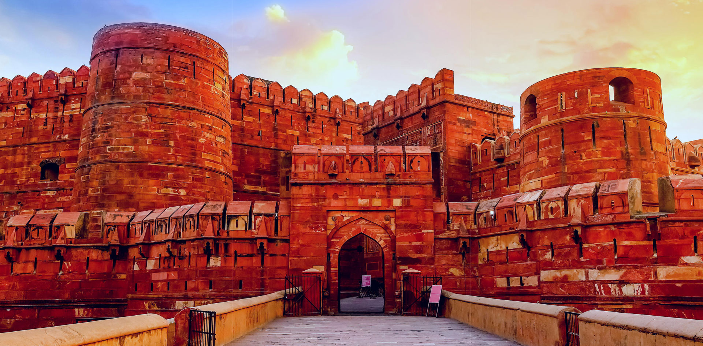
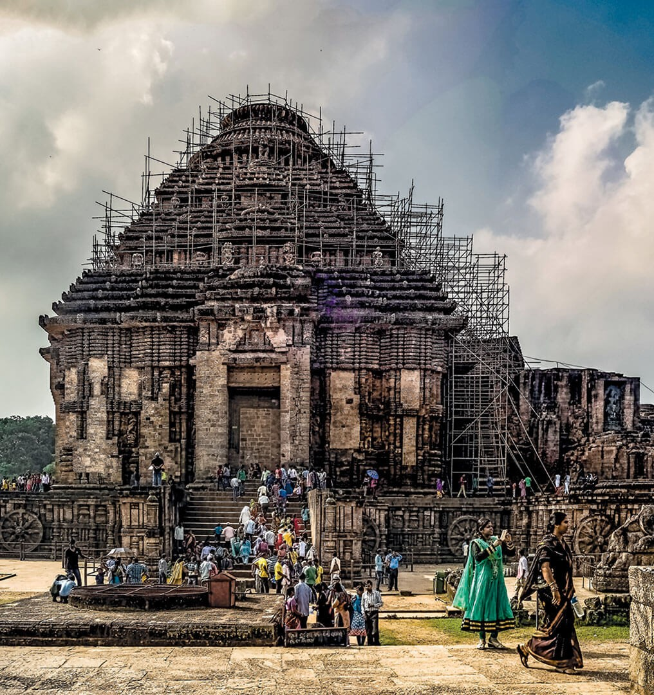
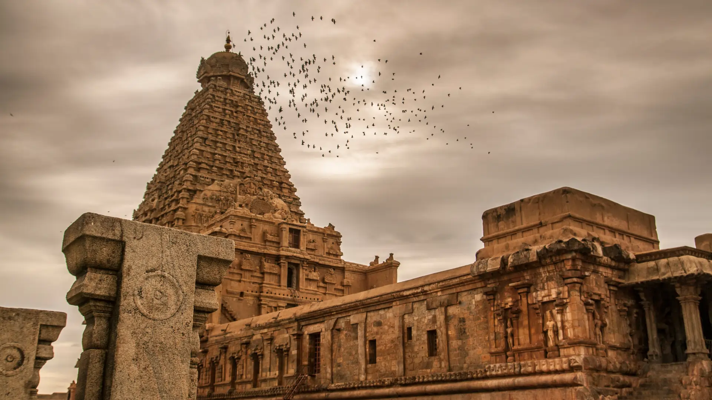

Delhi | 1190s
Qutub Minar
Indo-Islamic architecture marked by red sandstone, inscriptions, and layered dynastic history.
- Status
- Protected monument
- Hidden detail
- Arabic and Nagari inscriptions trace multiple building phases.

Architectural Heritage
Explore India's built memory through forts, temples, minarets, mausoleums, caves, and living sacred spaces.
Interactive monument archive
Delhi | 1190s
Indo-Islamic architecture marked by red sandstone, inscriptions, and layered dynastic history.

Rajasthan | 1799
A palace facade designed for ventilation, privacy, and urban spectacle in Jaipur's royal streetscape.

Odisha | 13th century
A monumental stone chariot dedicated to Surya, celebrated for scale, sculpture, and astronomical symbolism.

Tamil Nadu | 1010
A Chola masterpiece that combines devotion, geometry, mural traditions, and engineering ambition.
Before vs after
Drag the slider to reveal a symbolic restoration layer. The interface represents how cleaning, stabilizing, documenting, and managing visitor pressure can rescue endangered structures.